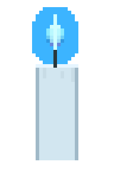

-
Brent Wong the Painter
captures the liminal surreal feeling
-
earth.nullschool
incredible earth phenomenon visualizer
-
Ian Fraser, talking naturally
a fascinating glimpse into a naturalist's mind
-
Window Swap
little glimpses from around the world
-
Atlas Obscura
best for off-the-beaten-path discoveries
-
Cloud Hiker
explore the internet thematically
-
Rotating Sandwiches
that's it!

Internet Facet
For being a series of tubes, the internet sure is interesting.
This is my corner of the internet. A collection of websites I have been enjoying.
Prone to intermittent updating...